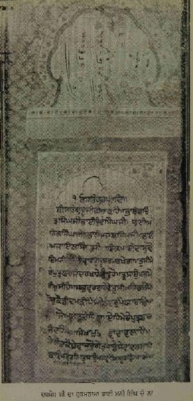
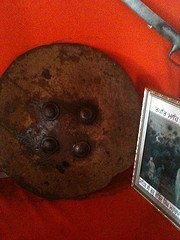
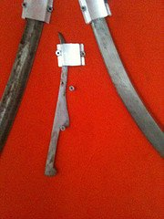
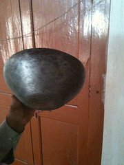
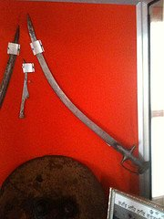
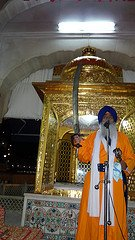

The history of the Khalsa is replete with countless inspirational stories of sacrifice and dedication. One such story is that of Shaheed Bhai Bachittar Singh, which is not well-known in detail. Many of us have heard about how Bhai Bachittar Singh, with the blessings of Sri Guru Gobind Singh, turned the Mughal army's charging elephant around at the battle of Anandpur Sahib, but the full details of the background of that incident and the details surrounding his life and shaheedi are perhaps not as well known. Let us take a closer look at this glorious shaheed's life based on historical sources, chiefly Guru Kian Sakhian (1790), Bhat Vehi sources, Panth Parkash Giani Gian Singh and Gurpartap Suraj Parkash Granth, amongst others.
Bhai Bachittar Singh came from a family that had an unparalleled legacy in Sikh history. He was the son of Bhai Mani Singh, whose identity and history have been the subject of confusion among Sikh historians. However, it has been established that there was only one Bhai Mani Singh, who was born in a Gursikh family and began serving as a youth in the court of Sri Guru Hargobind Sahib Ji. He continued serving in the courts of subsequent Gurus and played a crucial role in guiding the Khalsa after 1708. His martyrdom is remembered daily in the ardaas.
What is not well-known is the pivotal role that this family played in Sikh history as a whole. Bhai Bachittar Singh's relatives include his uncle Bhai Dyala Ji, who was martyred with Sri Guru Tegh Bahadur Sahib Ji, his maternal grandfather Bhai Lakhi Shah Vanjara, who cremated the body of Sri Guru Ji in Delhi, his younger brother Bhai Udai Singh, who was a general in the Khalsa army, and his other brothers Bhai Anik Singh, Bhai Ajab Singh, and Bhai Ajaib Singh, who were martyred in the battle of Chamkaur Sahib. Bhai Bachittar Singh had two sons, Bhai Sangram Singh and Bhai Ram Singh, who also became shaheeds. Bhai Sangram Singh was martyred in the battle of Chappar Chiri, and Bhai Ram Singh was martyred in Delhi on June 9, 1716. A total of 53 shaheeds came from this one glorious family alone.
Bhai Bachittar Singh was born on April 12, 1663, and was one of ten brothers, eight of whom became shaheeds. He had a close relationship with Sri Guru Gobind Singh Ji since childhood and spent most of his life in Guru Ji's company, participating in every major battle. According to the Bhatt Vahi Multani Sindhi, Bhai Bachittar Singh and Bhai Udai Singh were married on the same day, March 2, 1693.
In 1699, when Sri Guru Gobind Singh Ji prepared khande ki pahul for the first time, Bhai Mani Singh, Bhai Bachittar Singh's father, offered his five sons, including Bhai Bachittar Singh, to Guru Sahib. All five received amrit at that time.
Bhai Bachittar Singh was also one of the select 25 Sikhs who would remain in Guru Gobind Singh Ji's service at night by his bed. Some sources, such as Kavi Santokh Singh, suggest that Sri Guru Gobind Singh Ji used to affectionately call Bhai Bachittar Singh "Bohrupia," which means one with many forms, because he would change his robes several times a day.
For many years, the Hindu Hill Rajas surrounding Anandpur Sahib opposed the Sikhs. They feared the rising power of Sri Guru Gobind Singh Ji and the loyalty he received from his Sikhs. The principles of Gurmat were also not pleasing to the Hill Chiefs who staunchly believed in their gods and beliefs, such as caste and worship of stones.
The attitude of the Hill Rajas was even more reprehensible because many of their grandfathers had been the ones Sri Guru Hargobind Sahib Ji had freed from the Gwalior Fort. Raja Bhim Chand of Kehlur, who had personally visited Guru Sahib ji and seen the magnificence of the Gur-Darbar, became jealous. When he demanded that Guru Sahib Ji give him Parsadi Hathi, which had been gifted to Guru Sahib by his devotee Raja Ram Rai of Assam (who was born with the blessing of Sri Guru Tegh Bahadur), Guru Sahib Ji refused. This led to further tension and animosity, which eventually culminated in the attack by the combined forces of the Hill Rajas at Bhangani. Guru Sahib Ji defeated the Hill army and sent them back in an embarrassing retreat.
With the formation of the Khalsa, the Hill Chiefs were even more perturbed and offended that all castes were becoming one in the Khalsa. They felt that Guru Sahib's power had to be checked. On August 29, 1700, Raja Ajmer Chand of Kehloor attacked the fort at Taragarh. Earlier, his father Raja Bhim Chand had attacked Sri Guru Gobind Singh Ji in the battle of Bhangani. Taragarh was built on top of a hill and was five kilometers away from Anandpur Sahib. It was the site chosen by many Singhs to focus their days on naam and baani. Because it was the most isolated of the forts, it was the first one to be attacked. Sahibzada Baba Ajit Singh Ji was leading the Singhs at this fort and put up a strong fight. Upon hearing of the attack, Sri Guru Gobind Singh Ji dispatched 125 Singhs under the command of Bhai Udai Singh to support the Singhs at Taragarh.
On the following day of August 30, 1700, Raja Ajmer Chand launched an attack on Fatehgarh fort. This fort was still under construction, with one wall facing Kesgarh being unfinished. The Khalsa army at this fort was led by Bhai Bhagvan Singh, who was the eighth son of Bhai Mani Singh. The battle lasted for about 10 hours until sunset. Bhai Bhagvan Singh, who fought at the front lines, attained martyrdom. Raja Ajmer Chand was once again defeated and forced to retreat.
On the third day, August 31, 1700, Raja Ajmer Chand attacked the fort at Agamgarh (Holgarh). The attack lasted for approximately six hours, but the fort could not be breached, and Raja Ajmer Chand's forces were once again forced to retreat. Amongst the martyred Singhs in this battle was Bhai Bagh Singh, the son of Bhai Rai Singh, a brother of Bhai Mani Singh. Bhai Rai Singh himself became a martyr during the Battle of Mukatsar along with four other sons.
After suffering three days of defeats, the confidence of the hill chiefs was shattered. Raja Ajmer Chand called a meeting with other hill chiefs, including his maternal uncle Raja Kesari Chand of Jasval, to discuss further tactics to defeat Sri Guru Ji. Raja Kesari Chand declared to the gathering that they cannot stop now and that he would either return victorious or die in battle.
One of the older and most respected advisers to the hill chiefs, Minister Parmanand, suggested that an attack should be made on Lohgarh fort, but this time the door of the fort should be broken first. To do this, a battle elephant should be given liquor and have iron plates fixed all over its body and forehead. The elephant would be able to batter the door down, and a blade should also be attached to its trunk to cut through the enemy. This elephant would be the key to victory and finally defeat the Khalsa army.
The news of the planned attack on Lohgarh fort by the hill chiefs, led by Raja Kesari Chand, was conveyed to Sri Guru Gobind Singh's court by Bhai Chattar Singh Brar, who was working as a spy for the Khalsa. Upon hearing the news, Sri Guru Ji smiled and said, "Maha kaal rakhvaar hamaro. Maha Loh mai kinkar tharo," which means that the Almighty is our protector, and Lohgarh is our servant.
During the congregation, Duni Chand, who was the masand for the sangat of Majha and stationed at Holgarh with 500 soldiers, was told by Sri Guru Ji that he would defeat the drunken elephant that was to be used in the attack. However, Duni Chand was afraid and approached Bhai Daya Singh and other leading Singhs, asking them to intervene and suggest to Guru Sahib that the elephant be defeated in some other way. They reassured him of victory and told him that he would receive credit for it.
Duni Chand was still not satisfied and approached Bhai Udai Singh, the Jathedar of the Khalsa army, expressing his fear of dying a pointless death fighting the elephant. He suggested that they should leave Sri Guru Ji and go to Sodhi Naranjan Rai at Kartarpur or Mata Punjab Kaur, the widow of Baba Ram Rai, as they had no conflict with anyone and would give them more respect than they received from Sri Guru Ji.
Bhai Udai Singh tried to console Duni Chand and advised him to trust in Sri Guru Ji, but Duni Chand persisted in his fear and approached other leading Sikhs for support, including Bhai Gurbaksh Singh and Bhai Sher Singh Majithia. However, he received no encouragement from anyone, and in the end, decided to flee the fort with five of his followers. As they were scaling down the wall with a rope, it broke due to Duni Chand's weight, causing him to fall and injure his left leg. Despite this setback, they managed to escape.
When Sri Guru Ji asked about Duni Chand during the morning bhog of Sri Asi Ki Vaar, Bhai Sher Singh told him the story of Duni Chand's cowardly behavior. Sri Guru Ji smiled and commented that the death from which Duni Chand had run away was now waiting for him with its mouth wide open.
Duni Chand eventually made it to Majitha but was bitten by a snake and died from the venom. Later, his grandsons, Anoop Singh and Saroop Singh, sought forgiveness for their grandfather's error and fought in the Khalsa army, ultimately becoming shaheeds at Nirmohgarh.
Later in the morning, a spy from the Khalsa named Bhai Chattar Singh informed Sri Guru Ji that Raja Ajmer Chand was bringing a drunken war elephant to attack Lohgarh. Guru Ji looked around the Darbar to see which Singh should be sent to fight the elephant, and his gaze landed on Bhai Bachittar Singh. Bhai Bachittar Singh rose with folded hands and said, "Maharaj, I am at your service. What are your orders?"
Guru Ji replied, "You will go to Lohgarh fort and face the drunken elephant that the hill chiefs are sending. Prepare yourself." Guru Ji then gave Bhai Bachittar Singh the nagani barcha or snake-spear. Bhai Bachittar Singh did ardas before Guru Sahib and, with a radiant face, proceeded towards Lohgarh.
Soon after, another Singh arrived in the Darbar and informed Guru Ji that the army of the hill chiefs was approaching from the direction of Agampur, with the drunken elephant at the front followed by the horse-riders of the army. Bhai Alam Singh confirmed that he himself saw Raja Kesari Chand.
Bhai Alam Singh, who was Guru Sahib's Chaur-bardaar (one who does seva of Chaur Sahib), approached Guru Ji and said, "Maharaj, just as you have sent Bhai Bachittar Singh to stop the elephant, please send one of your servants to punish Raja Kesari Chand."
Guru Ji replied, "Alam Singh, you are right. He should certainly receive the fruit of his actions." Guru Ji then asked three times in the Darbar, "Is there any brave warrior like Bhai Bachittar Singh who will alone punish Kesari Chand?"
Upon hearing these words, Bhai Bachittar Singh's brother, Bhai Udai Singh, rose and said with folded hands, "At your order, I am here." Guru Ji asked Bhai Sahib Singh to give Bhai Udai Singh the karpa barcha that he had used to create the Tribeni spring near Guru Ki Lahore. Bhai Udai Singh then departed for Lohgarh, accompanied by his father Bhai Mani Singh and Bhai Alam Singh, along with some other Singhs.
Around 10am, Raja Ajmer Chand and his army were spotted approaching Lohgarh. They were in high spirits, confident of their victory. Kesari Chand was leading his men, making his horse dance, while the drunken elephant, covered in iron plates and armed with a four-foot-long blade on its trunk, led the way at the front. The elephant's loud bellows echoed through the hills.
Bhai Bachittar Singh knew that the moment he had been waiting for had arrived. He stood in Ardaas and asked for Guru Sahib's blessings. He then sought permission from his fellow Singhs to proceed. With their blessings and embraces, Bhai Bachittar Singh mounted his horse and left Lohgarh fort.
As Bhai Bachittar Singh saw the Hill army approaching Lohgarh very quickly, he noticed the drunken war elephant leading the way. With a loud roar of "Sat Sri Akaal!", he charged towards the approaching army on his horse. Focusing his consciousness on the Guru, he raced towards the charging elephant. As he neared the elephant, he clutched the spear that Sri Guru Ji had given him and rose from his saddle, putting all his weight on his feet in the stirrups. With the elephant now facing him and in striking distance, Bhai Bachittar Singh recoiled the spear and thrust it into the elephant's forehead. The spear pierced the iron plates and lodged into the elephant's flesh. Immediately, Bhai Sahib pulled back the spear, and a fountain of blood burst from the elephant's forehead.
With a loud shriek, the drunken elephant recoiled and threw its rider to the ground. It turned around and blindly charged into the Hill chiefs' forces, swinging its trunk left and right, cutting through the soldiers and trampling them underfoot. The Hill chief's men were stunned and shaken by this unexpected turn of events.
Witnessing this scene from the gate of Lohgarh, Bhai Udai Singh cried out "Sat Sri Akaal!" and stormed onto the battlefield. He rode close to Kesari Chand, who was still trying to lead his army, and shouted, "Kesari Chand! Attack me or else my blow will fall on you." Kesari Chand swung his sword at Bhai Udai Singh but missed. Bhai Udai Singh immediately returned the blow with his Sri Sahib and severed Kesari Chand's head from his body.
As the shocked Hill army looked on, Bhai Udai Singh picked up Kesari Chand's severed head, placed it upon the Karpa Barchha, and rode off towards Anandgarh to deliver it to Sri Guru Gobind Singh. Seeing the charge of the Singhs, the already demoralized Hill army retreated across the Charan Ganga rivulet. The Singhs inflicted heavy damage on their army, and Raja Ajmer Chand was also wounded by an arrow.
In this battle, according to the Bhatt Vahi Tlaundi Pargana Jin, Bhai Mani Singh was severely injured, and Bhai Alam Singh, Bhai Sukha Singh (another cousin of Bhai Bachittar Singh), and Bhai Kushal Singh became shaheeds.
After the battle, Bhai Udai Singh arrived at Anandgarh and, after offering his Fateh, placed Kesari Chand's head at Guru Ji's feet. Soon, other Singhs arrived from the battlefield and told Guru Ji of the victory that had taken place and the daring his Singhs had shown. Bhai Mani Singh and other injured Singhs were treated and cared for, and the Singhs celebrated their victory over the Hill chiefs' army.

From 1700 to 1705, the Hill Rajas persistently attacked the Khalsa at Anandpur Sahib, but despite having no faith in the oaths of the idol-worshipping Rajas, Guru Sahib continued to show good faith. Bhai Bachittar Singh and Bhai Udai Singh served at the forefront of the Khalsa army during this time.
The Hill Rajas formed closer ties with the Mughals, specifically with Wazir Khan of Sirhind, in their agenda against the Khalsa. During the battle of Nirmohgarh in October 1700, Rustam Khan, who had been sent by Sirhind to help the Hill Rajas, entered the battlefield, and the two brothers, Bhai Bachittar Singh and Bhai Chittar Singh, took an oath to teach him a lesson and play holi with their attackers' blood. The battle was fierce, and both Rustam Khan and Nassar Ali Khan were killed.
After the battle of Nirmohgarh, there was a period of relative peace for two years. During this time, on October 2nd, 1703, Sri Guru Gobind Singh blessed Bhai Mani Singh's family with the following Hukumnama in honor of their service:
"It is Satguru Ji's will that Bhai Bachittar Singh Ji, Bhai Udai Singh Ji, Bhai Anik Singh Ji, Bhai Ajab Singh Ji, Bhai Ajaib Singh Ji from the family of Mai Daas and Mani Singh, your honor will be protected by Vahiguru. You are my sons, from my own family. You have my happiness. You have complete knowledge and freedom of all (the Guru Darbar's) affairs. Whatever money is offered can come through them. They are my sons. It is a time to serve my Sikhs and sons. Whomever serves with dedication will have their service accepted in Dargah. Waheguru will protect you."
Starting in late 1703, the Hill Rajas once again launched hostilities against the Khalsa and attacked Anandpur Sahib. Skirmishes between the two sides continued intermittently until 1705. As the conflict persisted, the population of the town steadily dwindled until there were fewer than a thousand Sikhs left.
In 1705, Anandpur Sahib found itself surrounded on all sides by the Hill armies. Raja Ajmer Chand had personally visited Aurangzeb in the Deccan and filled his ears with stories about how Sri Guru Gobind Singh Ji was a danger to Mughal rule. Ajmer Chand claimed that the Guru would try to convert all the Hindus to his faith and then challenge the Emperor. Aurangzeb had been monitoring the conflict and was surprised that the Sikhs had not yet been defeated. He was further distressed to hear of this threat to his rule and directed Wazir Khan to use his full might to crush the Sikhs.
On May 20th, 1704, the combined armies of the Mughals and Hill Rajas marched on Anandpur Sahib for what they planned to be the final decisive blow against the Sikhs. Their numbers were in the hundreds of thousands and included not just soldiers but also professional looters who were waiting for Anandpur Sahib to fall.
Initially, the armies of the Mughals and Hill Rajas attempted to engage the Khalsa in open battle but were unsuccessful. For one month, the armies directly attacked the Sikhs but were repeatedly repelled by withering cannon fire and a storm of arrows. The attacking armies decided that it would be better to stay out of the range of the Sikhs and instead starve them into submission.
The siege of Anandpur continued, and no food was allowed to enter the town. Small groups of Sikhs would sneak out at night to gather supplies, but it was not enough to sustain them. The surrounding armies also retreated further and further away, making it much more difficult for the Sikhs to launch sorties.
As the siege continued for six months, the food supplies dwindled until the 500 remaining Singhs relocated to Anandgarh and subsisted on a single handful of roasted chickpeas per day. They even resorted to eating grass and tree bark. Sadly, Guru Sahib's prized elephant, Parsadi Hathi, perished from starvation, and several Singhs at Taragarh died due to the lack of supplies.
Meanwhile, the Mughal and Hill forces also faced severe difficulties. They grew weary of the prolonged siege of Anandgarh and had pillaged and plundered the surrounding areas, causing inhabitants to flee. The armies struggled to feed their soldiers and maintain their morale.
Emperor Aurangzeb proposed a solution to Sri Guru Gobind Singh Ji, urging him to leave Anandgarh and temporarily relocate elsewhere to save face on both sides. However, Guru Sahib recognized this as a deceptive strategy, as the enemy had used similar tactics before. Furthermore, winter was fast approaching, and it would soon be impractical for the armies to continue the siege.
Despite Guru Sahib's reluctance, many Singhs pleaded with him to accept Aurangzeb's offer, as they could no longer bear the hunger. They also learned that Ranghar reinforcements, requested by Raja Ajmer Chand, were on their way from Sirhind and would arrive imminently. Finally, after seven months and one day of siege, Guru Sahib acquiesced to the repeated requests of the Singhs. On the night of December 15, 1705, they left Anandgarh. A group of 40 Singhs, known as the "Muktas," pledged to stay with Guru Sahib until their last breath and formed his immediate retinue. This group included Baba Ajit Singh, Baba Jujhar Singh, the Punj Pyaray, the Punj Muktay (the second batch of Gursikhs to receive Amrit), Bhai Mani Singh's five sons (including Bhai Bachittar Singh and Bhai Udai Singh), Bhai Mani Singh's two brothers (Bhai Madan Singh and Bhai KaaTha Singh), and Bhai Jivan Singh (Bhai Jaita Ji).
As night fell, Guru Sahib and the 40 Singhs travelled a short distance to Gurdwara Sis Ganj Sahib, where they performed the ardaas for leaving Anandpur. Guru Sahib instructed Udasi Bhai Gurbaksh to look after Sis Ganj and ensure its preservation. They then returned to Anandgarh to prepare for the final departure. In the bitter cold of the December night, the exodus from Anandgarh commenced. Mata Gujri Ji and the two younger Sahibzadas left first, followed by the rest of the Singhs, and finally, Sri Guru Gobind Singh Ji and his cordon departed.
As the column of Sikhs proceeded towards Keeratpur Sahib, they moved quietly and cautiously. However, as they approached the river Sirsa, the Hill army began to pursue them and started firing arrows and bullets at the back of the group. At a place called the Shahi Tibbi or imperial hill, Sri Guru Ji looked towards Bhai Udai Singh and instructed him to inform Ajit Singh Sahibzada, Bhai Buddha Singh, and other Sikhs that their positions were ahead, and they should not take their positions at that spot. Sri Guru Ji further told Bhai Udai Singh that he and his group would attain shaheedi or martyrdom there, but the Guru would be with them.
Bhai Udai Singh led a jatha or group of 50 Singhs to halt the advance of the Hill and Mughal armies at the Shahi Tibbi. Bhai Udai Singh was brimming with fervor and passion, and as the armies approached, the Singhs took their positions on the hill and challenged the Mughal and Hill soldiers. The dark night did not reveal their small number, and as the battle began, Kavi Sainapati in Gur Sobha wrote that Bhai Udai Singh's focus was on the Guru. The Singhs attacked the advancing army with the ferocity of a lion attacking a flock of sheep. The armies were stunned and bewildered, and the hill was soaked in blood as the battle continued for four and a half hours. As dawn broke, the final Singhs embraced martyrdom, but their sacrifice provided enough time for the rest of the Sikh column to escape the attack. The small group of 50 Singhs had achieved the impossible and held back an army of thousands for hours.
Raja Ajmer Chand saw Bhai Udai Singh's body and believed that he had killed Sri Guru Ji. He severed Bhai Sahib's head and sent it to the Mughal command in Ropar for identification. The Hill army beat their drums of victory and returned, thinking they had finally won the day.
As the brave Bhai Udai Singh and his jatha fought off the charging armies, Sri Guru Gobind Singh Ji ensured the safe passage of Mata Gujri Ji and the younger Sahibzadas across the treacherous River Sirsa. After them, the rest of the caravan began to cross the river. Bhai Jivan Singh, also known as Bhai Jaita Ji, along with 100 other Singhs stood guard on the riverbanks, ready to engage with the Mughal and Hill armies as they arrived.
In the early hours of dawn, Bhai Jivan Singh's jatha clashed with the oncoming army. According to the Bhatt Vehis, Bhai Jivan Singh fought for four hours until a bullet struck him in the forehead, and with a cry of "Vahiguru Ji kee fateh!" he too became a glorious shaheed. All 100 Singhs in this jatha, along with Bibi Bhikhaan (the wife of Bhai Aalim Singh Nachna), also attained shaheedi.
Once the caravan had safely crossed the Sirsa River, with only half an hour until dawn, Sri Guru Gobind Singh Ji called upon Bhai Bachittar Singh to lead a third jatha of 100 Singhs and proceed towards Ropar. Their mission was to block the advance of reinforcements dispatched from Sirhind at the request of Raja Ajmer Chand. This would allow the remainder of the caravan to move forward unharmed.
Sri Guru Gobind Singh Ji himself proceeded with a small group of Singhs to the Haveli of Chaudhri Nihang Khan in the village of Kotla. The family of Nihang Khan had been admirers of the Gurus since the time of Sri Guru Hargobind Sahib Ji, who had stayed with them. Sri Guru Har Krishan Sahib Ji and Sri Guru Tegh Bahadur Sahib Ji had also visited the village and blessed the family.
Bhai Bachittar Singh and his jatha of Singhs fought fiercely to block the Ranghar army coming from Ropar. The Singhs knew that each moment they held the army back was crucial for the safety of the rest of the group. However, one by one, each Singh fell in the battle, and Bhai Bachittar Singh was severely wounded and lay close to death on the ground.
After the battle, a group of Singhs, including Sahibzada Ajit Singh and Bhai Madan Singh, found Bhai Bachittar Singh still alive, along with the badly injured young Baba Zorawar Singh Paalit, Sri Guru Ji's adopted son. They carried Bhai Sahib and Baba Zorawar Singh Paalit to Kotla Nihang Khan. Baba Zoravar Singh Ji was taken to the home of Bhai Gursaa Singh, who bandaged his wounds. Baba Zorawar Singh Ji had suffered 22 cuts on his body, which would take a long time to heal.
Meanwhile, Bhai Bachittar Singh was taken to where Sri Guru Gobind Singh Ji was staying in Nihang Khan's fort. Sri Guru Ji examined Bhai Sahib's wounds and had him brought to his own personal room. Sri Guru Ji then had Bhai Sahib laid down on his own bed, and he and the group of Singhs tended to Bhai Bachittar Singh's wounds throughout the day. Although there were many smaller wounds, one deep wound was particularly serious.
As night fell, Sri Guru Ji and the Singhs left Nihang Khan's fort, asking him to take care of Bhai Bachittar Singh, who was in no condition to travel. Before leaving, Sri Guru Ji gifted Nihang Khan his personal shield, kataar, and sword as a token of his appreciation.
Two days after Guru Gobind Singh Ji had left Nihang Khan's fort, a report was sent to Chaudhari Jaffar Ali Khan of Ropar that some Sikhs were staying there. Jaffar Ali Khan proceeded with a group of soldiers and surrounded the area.
As Jaffar Ali Khan entered the fort, he couldn't see any Sikhs. The troops with him proceeded to search the fort but found nothing. Only one room remained, where Bhai Bachittar Singh was lying inside. Nihang Khan's unmarried daughter, Bibi Mumtaaz, was also inside the room, attending to Bhai Sahib.
When Jaffar Ali asked to search the closed room, Nihang Khan protested and said, "My daughter and son-in-law are inside, you may not search that room."
Bibi Mumtaaz heard her father's words and with great reverence put her head on Bhai Bachittar Singh's feet. At that instant, she felt a powerful current of energy pass through her body and a wave of spirituality was awakened within her.
As per her father's words, Bibi Mumtaaz accepted Bhai Bachittar Singh as her husband from that moment onwards.
Jaffar Ali proceeded to leave the fort with his troops and apologized for the intrusion, saying that it was clear that someone had provided him false information.
When Bibi Mumtaaz emerged from the room, she declared that Bhai Bachittar Singh was her husband from this day forward. Her mother, Jaina, upon hearing this said, "Daughter, what are you saying? What will your father say?"
Bibi Mumtaaz had been engaged to be married into a family in Bassi Pathana, but she replied with determination, "Mother, my father has tied my fate to this man. Now only he is my husband."
However, Bhai Bachittar Singh was approaching the hour of his martyrdom. The next day, on 9 Poh, at around 10.30 pm, he left his body to take his eternal place in Sach Khand.
Nihang Khan brought Bhai Gursa Singh and Bhai Bugga Singh to perform Bhai Sahib's saskaar in the night. The cremation took place near the well of the fort.
Bhai Gursaa Singh first did the saskaar of Shaheed Bhai Bachhitar Singh and then secretly took the injured Baba Zoravar Singh Paalit to village DaDhaeRee, where a Sikh lady, Mata Poopaa(n), lived. Mata Poopaa(n) was a devotee of the Guru and used to sew clothes for Guru Gobind Singh Ji and present them as offerings. Mata slowly cleaned each wound and re-bandaged them. Baba Zorawar Singh Ji would live to re-join Sri Guru Ji at Sri Damdama Sahib but became a shaheed in a skirmish in Chitaur, Rajasthan, in 1708.
Bibi Mumtaaz's spiritual experience of putting her head on Bhai Bachittar Singh's feet had a profound and lasting impact on her life. From that moment on, she made a daily routine of bathing at amrit vela and performing her nitnem. She would then spend the day sitting before Sri Guru Gobind Singh Ji's shastars with a mala in her hands. At sunset, she would go to the cremation place of Bhai Bachittar Singh Ji to do her evening nitnem and spend the night quietly meditating with her mala in hand.
Remarkably, Bibi Mumtaaz lived for 131 years. During her final 32 years, she resided in Nurangpur Jhandian village. Once a year, on the day of Poh Sudi 4, she would arrive in a chariot at Kotla Nihang Khan to pay her respects at both memorials. She eventually passed away in 1810.
The memorial of Bhai Bachittar Singh still stands in the village of Kotla Nihang Khan to this day. While Sri Guru Gobind Singh Ji's weapons are kept at Gurdwara Bhatha Sahib, Bhai Bachittar Singh Ji's personal belongings are also preserved. These are the items that Bhai Bachittar Singh carried with him when he left Sri Anandpur Sahib, and were on his person when he was taken to the fort. The Gurdwara Sahib, which marks the place where Bhai Sahib's final rites were performed, houses the following items:
• A small sword with a scabbard
• A sarbloh pot
• A shield (dhaal)
• Two large swords (kirpans)
• Bhai Sahib's dumalla chakar was also present here, but it was stolen.




The nagni barchaa of Bhai Bachittar Singh Ji is preserved at Takhat Sri Kesgarh Sahib and his tegha is preserved at Sri Akal Takhat Sahib. The life of Bhai Sahib and the story of Bhai Mani Singh's family will continue to inspire the Khalsa Panth for generations to come.
